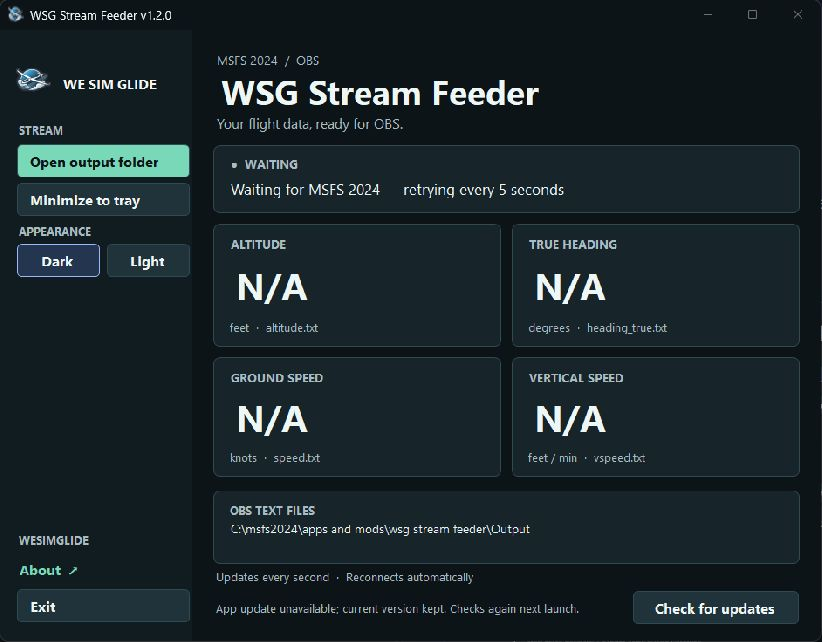

MSFS 2024 · OBS streaming
WSG Stream Feeder
Your flight data.
On your stream.
Choose the glider telemetry you want, export individual text files, or capture a compact graphical panel in OBS. Shared unit settings, aircraft reference gauges and automatic reconnect keep the display easy to manage.
Download for Windows ↓
Choose your flight data.
altitude_asl.txtheading_true.txtspeed.txtvspeed.txtThese four files are enabled by default. Settings also offers AGL, ground elevation, IAS, TAS, wind, weight, flaps, MacCready, track and more. Choose File, Panel or both for each value, and arrange the panel rows. Updates once per second. Connects through Microsoft SimConnect, reconnects automatically, and keeps feeding OBS while minimized to the taskbar. No OBS plugin required.
From download to overlay.
Extract the full ZIP
Choose a writable folder outside the simulator installation. Keep all the included files together, then open
WSG Stream Feeder.exe.Install Microsoft’s .NET 8 Desktop Runtime (x64) if Windows says it is missing.
Choose files or a capture panel
Use Open output folder in the feeder. In each OBS text source, enable Read from file and select its matching
.txtfile.Or choose Open capture window and add it as an OBS Window Capture source. Its height fits the selected rows; resizing sideways widens the gauges. Keep the capture window restored when recording.
Start your flight
The feeder connects automatically. Before telemetry arrives, the files display
N/A.Use the normal window Minimize button to keep it out of the way. Restore it from the Windows taskbar.
Upgrading from 1.2?
Point an old altitude text source at altitude_asl.txt. ASL is geometric altitude above sea level. The former ALT, GRND and CLIMB selections migrate to ASL, ELEV and V/SPD. ELEV uses ground_altitude.txt; vspeed.txt stays the same. Existing retired files become N/A.
Aircraft reference data supplies TAS VNE, maximum weight and flap labels when available. Unknown gliders still show live values. Sample preview affects only the graphical panel; text files always contain live readings or N/A.
Ready for the next session.
Choose Dark or Light to match your desktop. Your choice is saved. Official releases check for updates on startup and verify the download before installing it.
While connected to MSFS, an update waits for you. Finish your stream, then choose Restart to update or close and reopen the feeder. Your OBS files and settings are preserved.
See how the feeder works.
The source is available on GitHub, including the SimConnect reader, OBS text-file writer, interface, and update verification. The repository includes build instructions, compatibility tests, and a description of the app’s security behavior.
You can inspect the code and build your own version. The original code is licensed under PolyForm Noncommercial 1.0.0, allowing noncommercial use, modification, and sharing under its terms. Commercial use is not permitted. Microsoft components and supplied branding retain their separate terms.
Public source makes the application easier to inspect; it does not certify antivirus clearance. Development builds disable official automatic updates and are not claimed to be byte-for-byte identical to the official download. For normal installation, use the complete release ZIP.
A few useful details.
Is the speed indicated airspeed?
speed.txt is ground speed. IAS and TAS have their own selectable exports and gauges. Units are configurable. ASL is geometric altitude above sea level; heading is true, not magnetic.
Do I need an OBS plugin?
No. For individual text sources, enable Read from file, and select the matching files in the feeder’s Output folder.
Where are my settings?
Output defaults to an Output subfolder beside the EXE. For another location, copy settings.example.json to settings.json and edit OutputDirectory. Relative paths are resolved beside the application. Update the OBS file sources to match.
What happens if I close the feeder?
Exit stops telemetry and writes N/A to enabled files. Minimizing to the taskbar keeps it running. If MSFS closes, the feeder waits for it to return.
Windows or antivirus warns about the download
The application does not currently carry an Authenticode publisher certificate. Its signed updates verify release authenticity, but they do not provide Windows publisher reputation. Keep protection enabled, check the exact detection and release hash, and contact WeSimGlide if the file is flagged.
Verify your download.
SHA-256 of the published ZIP, read from the release metadata:
Release information is loading…A matching hash identifies the published ZIP; it is not a guarantee of antivirus clearance. The application separately verifies signed release metadata and the package’s file inventory.